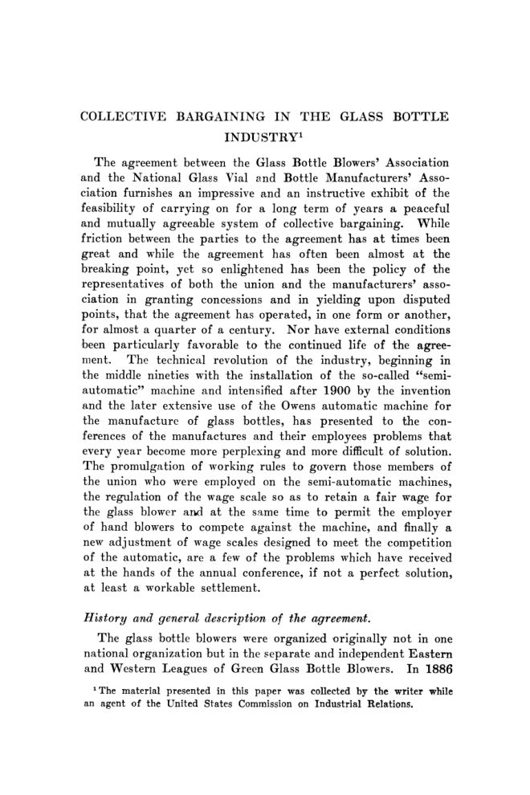

Wolman e o acordo que sobreviveu à máquina de fazer garrafas
Leitura: 8 min
Leo Wolman descreve o acordo nacional entre sopradores de garrafas e fabricantes: duas conferências por ano, tarifas por peça, votação em bloco e o presidente do sindicato como árbitro entre uma rodada e outra.


Em 1913, a associação dos fabricantes de garrafas decidiu que não discutiria mais, nas conferências com o sindicato, as queixas das fábricas que não pagavam para fazer parte dela. Essas fábricas recebiam do acordo coletivo as mesmas tarifas e regras que as associadas, sem dividir as despesas. A resposta do sindicato foi curta: concordava com o argumento e continuaria tratando todos com imparcialidade. O efeito, segundo Leo Wolman, foi a entrada de cerca de 35 fabricantes independentes na associação.
O episódio resume o artigo do número de setembro de 1916 da American Economic Review. Wolman, da University of Michigan, reuniu o material como agente da Commission on Industrial Relations, a comissão federal criada para estudar as relações de trabalho, e descreve um acordo que funcionava havia quase um quarto de século entre a Glass Bottle Blowers' Association e a National Glass Vial and Bottle Manufacturers' Association.
Como nasceu um acordo nacional?
Os sopradores estavam organizados, de início, em duas ligas independentes, a do Leste e a do Oeste. Em 1886, a do Oeste filiou-se aos Knights of Labor como District Assembly 143 e a do Leste como District Assembly 149. Desde esse ano havia conferências anuais entre as ligas e associações frouxas de fabricantes de cada região. O arranjo tinha um defeito: uma concessão obtida de um lado era usada para forçar a mesma concessão do outro, e os sopradores passavam com frequência de um distrito a outro, o que dificultava a disciplina.
Em 1890 as duas ligas se fundiram; em julho de 1891, deixaram os Knights of Labor e formaram a associação dos sopradores dos Estados Unidos e do Canadá. Os fabricantes do Leste e do Oeste ainda tentaram negociar em separado, mas o sindicato só aceitava tratar com um comitê conjunto das duas regiões. Com o tempo, a associação patronal tornou-se mais homogênea e, depois de 1902, passou a incluir também os fabricantes de vidro de pote coberto, que antes negociavam numa conferência à parte.
Como se negocia uma tarifa por peça?
Até 1899 havia uma única conferência por ano, em julho ou agosto. Como cada lado chegava com propostas que o outro não conhecia, criou-se uma conferência preliminar em maio. Nela as propostas são apresentadas e as menos controversas se resolvem; as demais voltam às convenções das duas entidades e vão à conferência final. Regra central: nenhuma questão que não tenha passado pela preliminar pode ser examinada na final. Em 1900, o presidente do sindicato escreveu que a reunião de maio se tornara uma necessidade vital.
O acordo, diz Wolman, fixa em detalhe quase todas as condições de emprego, ao contrário de acordos nacionais que deixam aos sindicatos locais as regras de trabalho. As seções locais só legislam sobre a vida interna do sindicato. Os representantes de cada lado são as diretorias: a do sindicato eleita a cada ano na convenção, a dos fabricantes nomeada a cada ano pelo presidente da associação. O presidente do sindicato ocupava o cargo havia quase vinte anos.
Os representantes vão às conferências com plenos poderes e sem instruções fechadas. Quando uma convenção quis retirar deles o poder de alterar tarifas e regras de aprendizagem, o presidente do sindicato respondeu que nenhum comitê de fabricantes se sentaria diante de um comitê sem poder de decidir. Em 1906, uma moção que proibia aceitar redução salarial foi trocada por outra que só declarava não ser aconselhável aceitá-la.
“Nenhum comitê de fabricantes se reuniria com o seu comitê se ele não tivesse plenos poderes.” (“No committee of manufacturers would meet your committee unless it had full power to act”)
Do lado patronal também houve queixas. Os fabricantes de garrafas feitas à mão diziam que as regras favoreciam os donos de máquinas, e em 1912 alguns deles deixaram as conferências por esse motivo. Outros achavam que o comitê patronal pressionava pouco. Em 1914, a conferência preliminar abriu uma sessão informal para ouvir esses associados, que, segundo a ata, saíram mais satisfeitos do que chegaram.
O que acontece quando não há acordo?
Não há votação formal prevista, mas cada lado vota em bloco; uma medida só entra no acordo se agradar à maioria dos representantes de cada parte. Quando há impasse, a conferência se dissolve e a maioria das fábricas volta a operar, às vezes com atraso, sob as tarifas e regras do ano anterior. Em 1905 os fabricantes exigiram uma redução geral das tarifas por peça, o sindicato recusou e a conferência terminou sem data para nova reunião; durante meses, diz Wolman, o acordo esteve suspenso.
Em 1909 a cena se repetiu. A conferência de 26 de julho se dissolveu e as fábricas não abriram. No início de setembro, a American Bottle Company aceitou as condições do sindicato, e a associação patronal pediu nova conferência, que terminou em acordo. Em 1906, o presidente da associação patronal sugeriu submeter a divergência a um juiz; a ideia não foi adiante. Para Wolman, o consenso no ramo é contrário a arbitrar as grandes questões: os dois lados preferem discutir até o fim e, se preciso, trabalhar em trégua armada sob as regras antigas.
Quem resolve as disputas entre uma conferência e outra?
Até 1902 o acordo não dizia quem decidiria, por exemplo, em que faixa de preço entraria uma garrafa nova. Naquele ano, por sugestão dos fabricantes, o presidente do sindicato passou a interpretar as regras, com decisão obrigatória até revisão pela conferência conjunta. A disputa começa na fábrica, entre o empregador e o comitê de fábrica; se não houver acordo, vai ao presidente. Se a conferência julgar alto um preço fixado por ele, o fabricante é reembolsado; se julgar baixo, paga a diferença.
Wolman registra que, em mais de doze anos, as decisões do presidente raramente foram revistas e que ninguém propôs retirar-lhe o poder. A disciplina também vale para baixo: quando seções de San Francisco entraram em greve contra uma redução aprovada em conferência, a direção nacional mandou os grevistas voltarem, e a convenção apoiou a ordem. Do lado patronal, a associação não tem meios de punir quem descumpre, como reconheceu o presidente da conferência de 1905.
“O poder de fazer cumprir está inteiramente nas mãos dos sopradores.” (“the power to enforce being wholly in the hands of the blowers”)
Por que o acordo durou?
Wolman aponta duas razões do lado sindical: trabalhadores altamente qualificados, por muito tempo bem pagos, que apoiaram até reduções voluntárias de tarifas, e o caráter nacional do acordo, que torna os dirigentes responsáveis pelo seu conteúdo e pela sua execução. Do lado patronal, a explicação é econômica: tarifas e regras uniformes eliminam as desigualdades entre empregadores que acompanham a negociação descentralizada. Some-se o interesse em não perder a conferência anual e a força do sindicato, capaz de retirar a mão de obra de quem descumpre.
Na minha leitura
Na minha leitura, o artigo é uma descrição precisa de como se reduz o custo de negociar. A conferência preliminar elimina a surpresa; a regra de que nada novo entra na final fixa a agenda; a votação em bloco obriga cada lado a resolver suas divergências internas antes de sentar à mesa; e o árbitro entre conferências trata o caso novo, a garrafa que ninguém previu, sem reabrir o acordo inteiro.
O ponto econômico mais fino está na explicação da adesão patronal. Uma tarifa uniforme para todo o ramo funciona como regra comum de concorrência: nenhum fabricante ganha vantagem pagando menos pelo mesmo trabalho. O problema do carona, fábricas que recebiam o benefício sem pagar a conta, aparece no episódio de 1913 e é resolvido sem punição, apenas tirando delas o acesso ao recurso.
Glossário
- Negociação coletiva
- fixação de salários e condições de trabalho por acordo entre um sindicato e um ou mais empregadores.
- Tarifa por peça
- pagamento por unidade produzida; no vidro, preço por tipo de garrafa soprada.
- Conferência conjunta
- reunião anual dos representantes do sindicato e da associação patronal que fixa tarifas e regras.
- Comitê de fábrica
- comissão de trabalhadores de um estabelecimento escolhida para tratar com o empregador.
- Pote coberto (covered pot)
- recipiente de fusão do vidro usado na produção tradicional, por oposição ao tanque.
- Carona (free rider)
- quem aproveita um benefício coletivo sem pagar a parte que lhe cabe no custo.
Fontes
- Collective Bargaining in the Glass Bottle Industry — Leo Wolman (University of Michigan) (pp. 549–567). JSTOR · Internet Archive (PDF)
- Edição completa, com os demais artigos: Nº 143 do Arquivo.
Documento em domínio público (EUA, publicado antes de 1931), via JSTOR Early Journal Content e Internet Archive. Resumo e comentário do autor deste site, sem afiliação com a American Economic Association. Encontrou um erro? Escreva: a correção é publicada no próprio texto, com data.
↑ Nº 143 · Setembro de 1916: o acordo do vidro, as concessionárias e o correio Bauer e a pergunta de que depende toda tarifa regulada: valor de quê? →